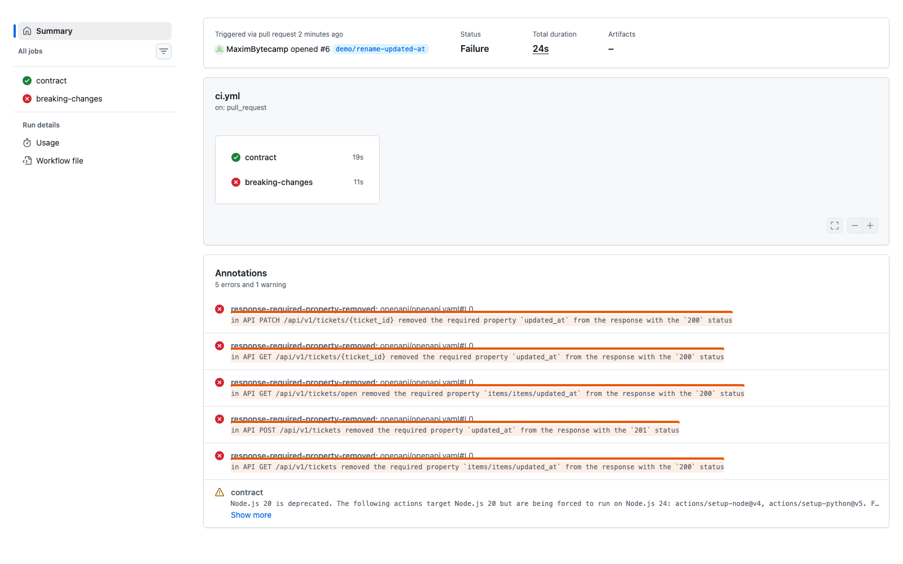
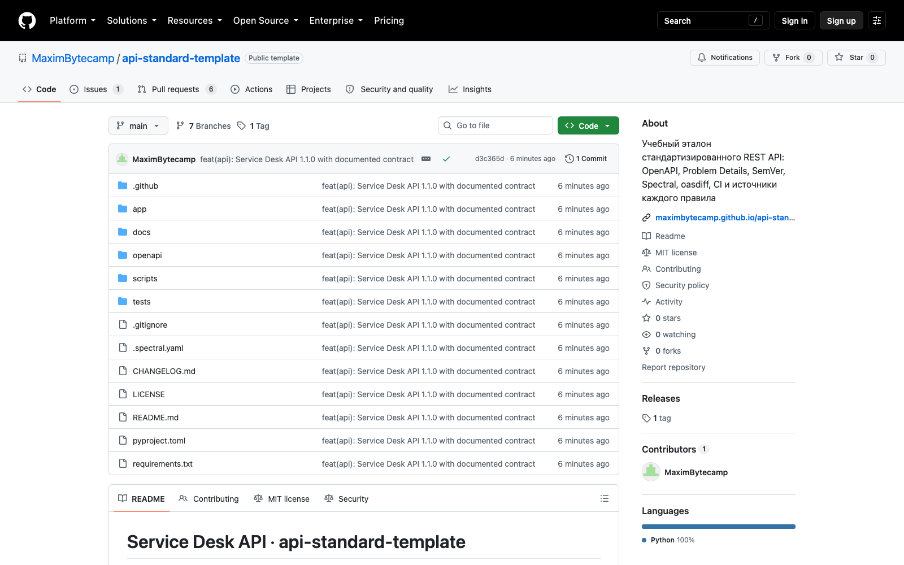

Справочник «Стандартизация HTTP API» · модуль 1 · API как контракт
Глава 1.1
Контракт
и проверка соответствия
Работающий сервер и готовый к передаче API — не одно и то же. В этой главе разобрано, что именно API обещает клиенту, из-за чего интеграция ломается при внешне безобидном изменении и чем запись правил отличается от их проверки.
- Категория
- Основы стандартизации API
- Уровень
- Начальный
- Связанные главы
- 1.2 Один обмен · 5.2 Breaking changes · 6.1 API Style Guide
- Зачем это знать
- Чтобы отличать «сервер отвечает» от «API можно отдать другой команде»
§1Что сервер обещает клиенту
Слово «контракт» в разработке означает не юридический документ, а набор обещаний, которые одна программа даёт другой. Разберём их на учебном сервисе. Service Desk API — сервис регистрации обращений в поддержку: сотрудник сообщает «не работает VPN», специалист меняет статус обращения, пока проблема не решена.
Обещания этого сервиса можно выписать по пунктам, и каждое из них проверяемо:
- по адресу
/api/v1/ticketsметодомGETвернётся страница обращений; - в каждом обращении будут поля
id,title,description,status,created_at,updated_at; statusпримет одно из трёх значений:open,in_progress,closed;- создание выполняется методом
POSTна тот же адрес и отвечает кодом201, а адрес нового обращения приходит в заголовкеLocation; - если обращения с таким идентификатором нет, придёт код
404и тело в форматеapplication/problem+json; - операции записи требуют токен; без него —
401, с токеном только для чтения —403.
Пока сервис выполняет эти обещания, любая программа, написанная по ним, работает. Если сервис меняет хотя бы одно обещание без предупреждения, перестаёт работать программа клиента, а не сам сервис. Автор изменения об этой программе может не знать и доступа к ней не имеет.
Совокупность видимых клиенту обещаний сервиса: адреса ресурсов, методы, параметры, структура запроса и ответа, коды состояния, формат ошибок, требования аутентификации и правила изменения всего перечисленного.
У контракта две стороны и один посредник — протокол HTTP. Клиент не видит ни языка сервера, ни его базы данных, ни числа запущенных экземпляров. Он видит адреса, методы, коды и JSON. Стандартизируют именно этот видимый слой: он сохраняется при переписывании сервера на другой язык и при смене базы данных.
§2Почему «работает» ещё не значит «готово»
Возьмём изменение, которое выглядит безобидно. Разработчик решил, что имя поля updated_at неудачное, и переименовал его в modified_at. Переименование он выполнил аккуратно: поправил схему ответа, хранилище и все тесты.
class Ticket(BaseModel): id: UUID title: str status: TicketStatus created_at: datetime updated_at: datetime
class Ticket(BaseModel): id: UUID title: str status: TicketStatus created_at: datetime modified_at: datetime
Запускаем проверки проекта. Все 31 тест проходят: сервис отвечает 200, отдаёт обращения, ошибки возвращает в прежнем формате. Со стороны кода изменение выполнено правильно.
............................... [100%] 31 passed in 0.08s
Теперь посмотрим на то же изменение со стороны контракта. Инструмент oasdiff сравнивает описание API до и после изменения и перечисляет то, что сломает существующих клиентов. Вот его настоящий вывод на этой ветке:
in API GET /api/v1/tickets removed the required property `items/items/updated_at`
from the response with the `200` status
in API POST /api/v1/tickets removed the required property `updated_at`
from the response with the `201` status
in API GET /api/v1/tickets/open removed the required property `items/items/updated_at`
from the response with the `200` status
in API GET /api/v1/tickets/{ticket_id} removed the required property `updated_at`
from the response with the `200` status
in API PATCH /api/v1/tickets/{ticket_id} removed the required property `updated_at`
from the response with the `200` statusПять операций перестали отдавать поле, которое обещали. Мобильное приложение, написанное полгода назад, ищет в ответе updated_at, не находит и показывает пустую дату. Сервер при этом «работает»: отвечает 200 и не пишет ни одной ошибки в лог.

contract — тесты и линтер прошли. Красный breaking-changes — сравнение контрактов нашло пять нарушений. Изменение не попадёт в main: ветка защищена, обе проверки обязательны.Тесты проверяют, что сервис делает то, что задумал автор изменения. Контрактные проверки отвечают на другой вопрос: продолжает ли сервис делать то, что обещал раньше. Поэтому зелёные тесты не означают, что контракт не нарушен.
§3Что именно стандартизируют
Контракт состоит из элементов, и каждый из них — отдельный источник несовместимости, если о нём не договориться. В таблице ниже перечислено, что фиксируют в правилах и что ломается, когда правила нет.
| Элемент контракта | Что фиксируем | Что ломается без правила |
|---|---|---|
| Адреса ресурсов | существительные во множественном числе, версия в начале пути | клиент не угадывает третий адрес, зная первые два |
| HTTP-методы | какой метод для какой операции | удаление приходит методом POST, и посредник его повторяет |
| Параметры | что в пути, что в query, какие значения допустимы | идентификатор ищут то в пути, то в параметре |
| Структура JSON | стиль имён, форматы даты и времени | разбор ломается на втором ответе: created_at и createdAt |
| Коды состояния | какой код описывает какой исход | клиент разбирает текст ошибки вместо кода |
| Формат ошибок | единая структура тела ошибки | на каждый endpoint пишется свой обработчик |
| Версионирование | где записана версия и когда она меняется | несовместимое изменение выходит без предупреждения |
| Документация | что описано, где лежит, как обновляется | README расходится с кодом и вводит в заблуждение |
| Безопасность | какие операции требуют токена и какие права | операция записи открыта всем, и это заметят не сразу |
| Правила изменения | что считать breaking change | каждый решает сам, и клиенты ломаются по очереди |
| Проверка | чем и когда правила применяются | правила существуют на бумаге и не выполняются |
Последняя строка таблицы относится не к самому API, а к порядку работы с правилами. Ей посвящены модули 6 и 7.
§4Стандартизация и проверка соответствия
Дисциплина называется «стандартизация, сертификация и техническое документоведение». Первые два слова обозначают разные действия, и различать их нужно с самого начала.
- отвечает на вопрос «как должно быть»;
- результат — документ с правилами;
- в учебном проекте это
docs/API_STYLE_GUIDE.md; - правила формулирует команда, опираясь на стандарты и опыт компаний.
- отвечает на вопрос «так ли это сейчас»;
- результат — отчёт: прошло или нет;
- в учебном проекте это тесты, линтер и проверки в CI;
- выполняется при каждом изменении, без участия человека.
Разделение важно практически. Правило, которое живёт в голове тимлида, стандартом не является: его нельзя показать новому разработчику, нельзя обсудить и нельзя проверить. Правило, записанное в документе, но ничем не проверяемое, со временем перестают соблюдать: о нём просто забывают.
Правило «у каждой операции должен быть operationId» записано в API_STYLE_GUIDE.md — это стандартизация. Проверку выполняет линтер Spectral и тест test_every_operation_has_operation_id: они падают, если правило нарушено. Разработчик узнаёт об этом через минуту после push, а не на review через два дня.
§5Почему у API нет сертификата
В технике сертификация — процедура, в которой независимая сторона подтверждает соответствие продукта требованиям стандарта и выдаёт документ. Так сертифицируют кабель, детское автокресло, медицинский прибор. Продукт испытывают в аккредитованной лаборатории, а сертификат можно предъявить покупателю.
Для обычного REST API такой процедуры не существует. Нет органа, который выдаст вашему сервису документ «API соответствует правилам», потому что нет единого обязательного стандарта, которому такой сервис должен соответствовать. Есть стандарты протокола (их издаёт IETF), есть формат описания (его развивает OpenAPI Initiative), есть правила отдельных компаний — и они друг другу не тождественны.
Фраза «наш API сертифицирован» без указания, кем и по какому стандарту, не означает ничего. В отчёте по практической работе пишите иначе: «API соответствует правилам docs/API_STYLE_GUIDE.md, проверка выполняется pytest, Spectral и oasdiff в GitHub Actions; последний прогон — ссылка».
Отдельные области — исключение. Платёжные сервисы проходят аудит PCI DSS, медицинские системы — проверки по локальному законодательству, государственные сервисы — требования регуляторов. Но это сертификация организации и процессов, а не «правильности API» как таковой.
§6Чем проверяют в этой книге
Раз внешнего органа нет, проверку берёт на себя репозиторий. В учебном проекте каждое правило привязано к инструменту, который применяет его автоматически.
operationId, совпадение выгруженного описания с кодом.31 тестinfo, теги и operationId у операций, snake_case в схемах, application/problem+json у ошибок.линтерmain: находит удалённые и переименованные поля, новые обязательные параметры, изменение типов.breaking changesopenapi/openapi.yaml в репозитории совпадает с тем, что генерирует код. Разошлись — сборка падает.против driftПервые четыре проверки выполняют программы, последнюю — человек на ревью. Автоматически проверяется не всё: понятно ли названо поле, уместен ли выбранный код ответа, не раскрывает ли сообщение об ошибке лишнего. Чем больше правил переведено в тесты и правила линтера, тем меньше таких вопросов остаётся человеку.

docs/ — правила и источники, openapi/ — выгруженный контракт, tests/ — проверки контракта, .github/ — CI, шаблоны и владельцы кода.§7Частые ошибки
§8Проверьте себя
- Назовите три обещания, которые Service Desk API даёт клиенту, и скажите, чем каждое проверяется.
- Почему переименование
updated_atвmodified_atне ломает тесты, но ломает клиентов? - Чем стандартизация отличается от проверки соответствия? Приведите по одному примеру из учебного проекта.
- Что ответить на вопрос «ваш API сертифицирован?» так, чтобы ответ был правдой?
- Какие проверки контракта человек выполняет сам и почему их нельзя поручить линтеру?
адреса · методы · параметрытело · коды · ошибкиверсия · безопасностьdocs/API_STYLE_GUIDE.mdMUST / SHOULD / MAYисточник у каждого правилаpytest · spectraloasdiff · export --checkCODEOWNERS + CIне «сертифицирован»а «соответствует правилампроекта, проверка — ссылка»Справочник «Стандартизация HTTP API» · модуль 1 · глава 1.1Макаров Максим Николаевич